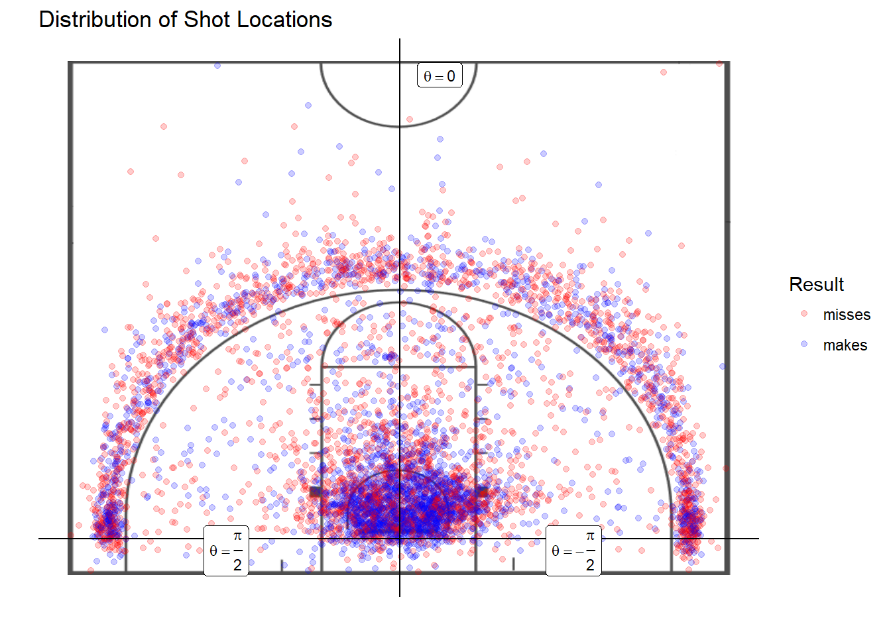

Chapter 3 Data
(This figure only contains shots that occur in front of the half-court line). Theta has a range of \(2\pi\) radians, but this plot shows that most of the attempts occured within the interval (-\(\frac{\pi}{2}\), \(\frac{\pi}{2}\)). This figure also shows the bimodal distribution of shot distance over all players.
3.1 Description of Dataset
The data for this analysis comes from SportVU, a player-tracking system from STATS, LLC. that provides precise coordinates for all ten players and the ball at a rate of 25 times per second. The Duke University Men’s Basketball team permitted us to use their SportVU data from the 2014 to 2017 basketball seasons for this project. Since the ability to record this data depends on specialized tracking cameras, Duke does not have this data for every game they play—only home games, and a few road games in arenas that had the techology installed. Therefore, there is a substantial amount of missing data between games. More specifically, between the 2014 and 2017 seasons, the Duke Men’s Basketball team played 147 games; this dataset contains 94 games, with 82 at Duke and 12 on another court.
For our analysis, we use the following files for each game:
- Final Sequence Play-by-Play Optical:
This dataset comes in an a semi-structured Extensible Markup Language (XML) file, where there is a unique element for each “event” (an event is a basketball action such as a dribble, pass, shot, foul, etc.). Each event element has attributes describing the type of event, the time of the event, and the player who completed the action. We use these files to uncover when a shot is attempted in a game, who attempted the shot, and the result of the shot attempt.
- Box Score Optical:
We use this dataset to match the names and IDs of players who are in the game. This is also an XML file, with elements corresponding to individual players. These elements contain attributes describing information about the player (e.g. team name, jersey number) and various statistics for the game (e.g. points, assists, distance run).
Final Sequence Optical:
These XML files contain the locations of all ten players and the ball during precise time intervals within the game. Each timeunit has a unique element, and these elements have attributes describing the locations. We merge this with the Final Sequence Play-by-Play Optical data on the time attribute to obtain the shooter’s location at the moment of a shot attempt.
3.2 Data Cleaning
Steps taken to clean the merged shooter IDs with shot locations include standardizing the locations onto a half-court setting (the teams switch sides of the court halfway through every game, which means that we have to flip the coordinates across the middle of the court for half of the data in every game), converting the x-y coordinates to polar coordinates (in the units of feet and radians), and including an indicator for home games. The final dataset had 5467 observations from 31 shooters over 94 games. A summary of the cleaned dataset, and an excerpt:
| Type | Values | Extra Details | |
|---|---|---|---|
| season | categorical | {2014, …, 2017} | |
| gameid | categorical | NA | 94 unique values |
| time | continuous | NA | 13-digit timestamp in milliseconds |
| globalplayerid | categorical | NA | 31 unique values |
| r | continuous | [0, \(\infty\)) | Distance of shot from hoop (feet) |
| theta | continuous | [-\(\pi\), \(\pi\)] | Angle of shot (radians) |
| home | categorical | {0,1} | 1 if shot occured during a home game, 0 otherwise |
| result | categorical | {0,1} | 1 if shot was made, 0 if shot was missed (response) |
| season | gameid | time | globalplayerid | r | theta | home | result |
|---|---|---|---|---|---|---|---|
| 2014 | 201401070173 | 1389141733839 | 603106 | 4.207557 | 1.0745975 | 1 | 1 |
| 2014 | 201401070173 | 1389141844712 | 601140 | 16.653667 | 1.2972998 | 1 | 0 |
| 2014 | 201401070173 | 1389143172185 | 696289 | 18.790131 | -0.0580684 | 1 | 1 |
| 2014 | 201401070173 | 1389143196303 | 601140 | 23.462949 | 0.9538861 | 1 | 1 |
| 2014 | 201401070173 | 1389143220261 | 756880 | 6.536497 | 0.0696471 | 1 | 0 |

3.3 Exploratory Data Analysis
The following exploratory plots examine how consistent the probability of a made shot is, using a loess smooth curve on the binary outcomes. We present these smoothed plots for four high-usage basketball players at Duke University between the 2013-2014 and 2016-2017 seasons, and we leave the others in Appendix number. Each plot represents a single player’s ordered shooting outcomes for a single season. These plots do not account for the amount of time in between shots, but simply shot order and outcome.

We can see that the plots vary in the consistency of their made shots, since they all contain spikes and trends. For example, the third plot initially has a very high success rate, which quickly falls to the middle after about thirty shot attempts, and the second plot has a noticeable upward trend in shot success beginning around shot number one hundred fifty.
We investigate the shooting outcomes using Bayesian models, and present the results in the next section.